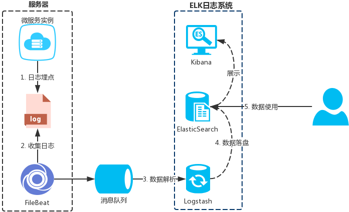
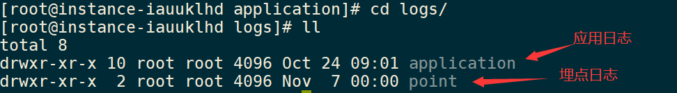
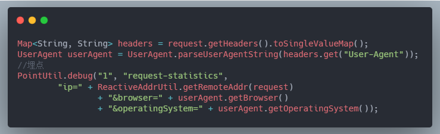
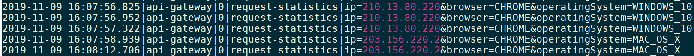
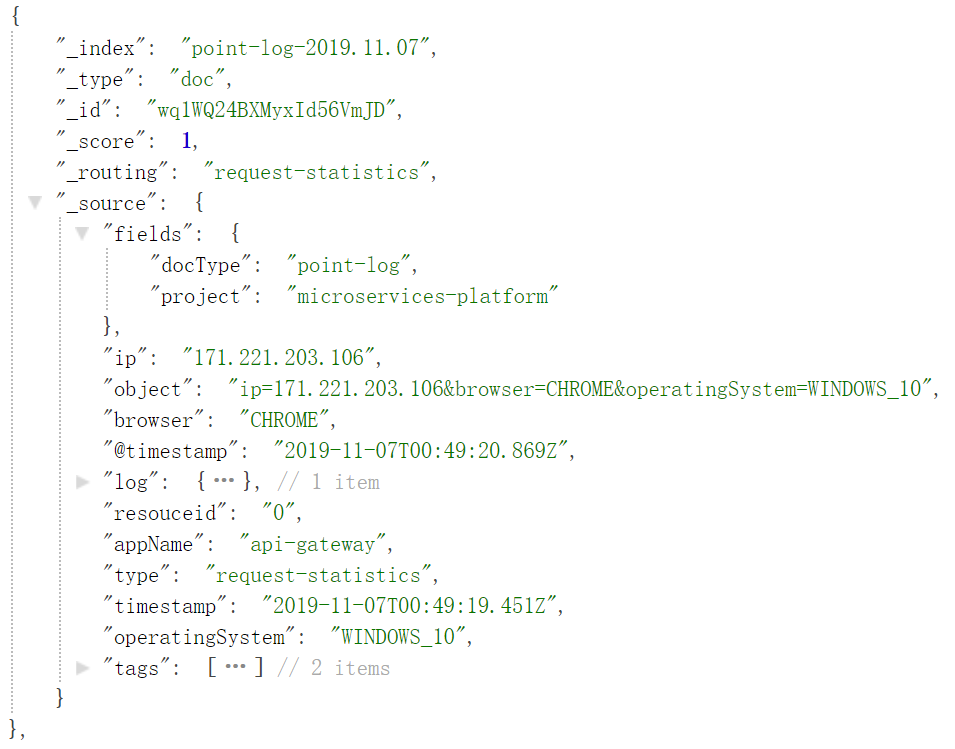
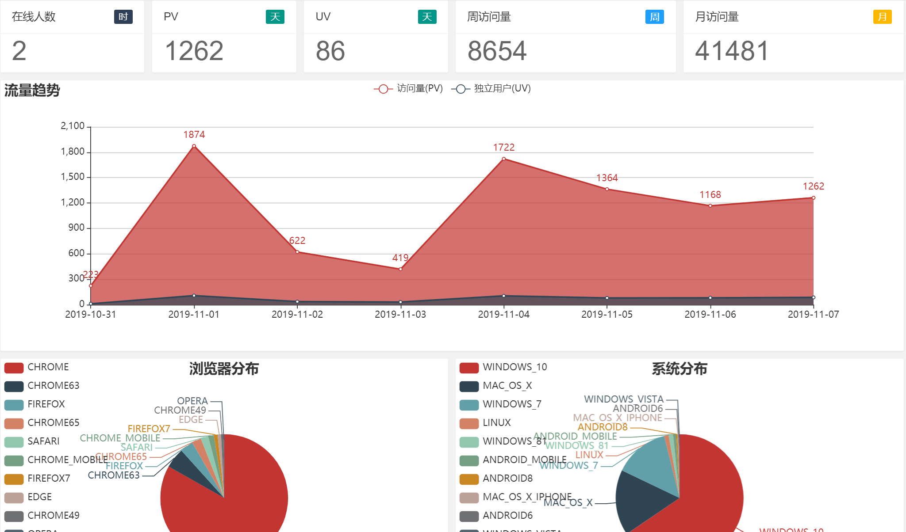

互联网公司一般都会有专门的数据团队对公司的一些业务指标负责；为了拿到这些基本的业务指标，一般也要工程团队去配合做一些数据采集工作，于是埋点诞生了。
埋点的方式有很多种，本文主要介绍 日志埋点 这种方式以及实现思路和案例。
日志埋点就是通过程序打印log日志的方式进行业务/行为数据的记录

通过 日志埋点 来实现业务监控和行为分析主要需要以下4个步骤
日志数据的生成直接使用 Logback 等日志框架就可以了，可以自己封装公共方法、aop、注解等方式来生成指定的埋点日志
但是为了便于后面的数据解析，日志数据需要规范先行
所有的埋点日志必需约定好统一的格式，例如：{时间}|{来源}|{对象id}|{类型}|{对象属性(以&分割)}
按上面的格式生成的日志为：
2019-11-07 10:32:01|api-gateway|1|request-statistics|ip=171.221.203.106&browser=CHROME&operatingSystem=WINDOWS_10
避免埋点的日志文件和系统本身输出的日志混淆

埋点的日志输出的目录、文件等需要和应用本身的日志分离，通过
Logback的配置就能实现
埋点案例

生成日志

网关埋点用户请求
关于日志数据的收集可选择的中间件比较多，除了图中的 FileBeat 之外还有 Flume、Fluentd、rsyslog 等；需要每台服务器都部署一个收集中间件。
每台服务器部署一个就行了，就算一台服务器中启了多个微服务也是可以一齐收集
PS：日志收集后面的 消息队列 并不是必需的可以去掉，但是增加 消息队列 后有以下两个优点
使用 Logstash 的grok表达式解析日志数据并结构化，以上面的日志数据为例
2019-11-07 10:32:01|api-gateway|1|request-statistics|ip=171.221.203.106&browser=CHROME&operatingSystem=WINDOWS_10
结构化后的日志数据为：
{
timestamp: '2019-11-07 10:32:01',
appName: 'api-gateway',
resouceid: '1',
type: 'request-statistics',
ip: '171.221.203.106',
browser: 'CHROME',
operatingSystem: 'WINDOWS_10'
}
通过 Logstash 能自动创建 Elasticsearch 索引并以天为单位分片

可以通过索引模板来指定每个字段的类型和分词器等属性
日志数据落盘到 Elasticsearch 后，就可以通过聚合查询等方式实时显示监控数据或者分析日志数据
监控案例

日志埋点 只是其中一种埋点手段而已，优点是系统无入侵且灵活；日志收集、解析、落盘等都可以灵活搭配选择不同的中间件，并且不需要修改源系统的代码；并且可以方便对接其他分析平台(例如: 大数据平台)
PS：业务监控是否可以不做日志埋点，直接查询业务的数据库呢？(不建议这样做)
使用日志埋点能方便实现实时业务数据预警
举个栗子：日志收集后面添加流计算中间件，计算某个时间窗口内优惠卷日志的数量或者金额大于某个阀值，则发出预警
推荐阅读
扫码关注有惊喜！